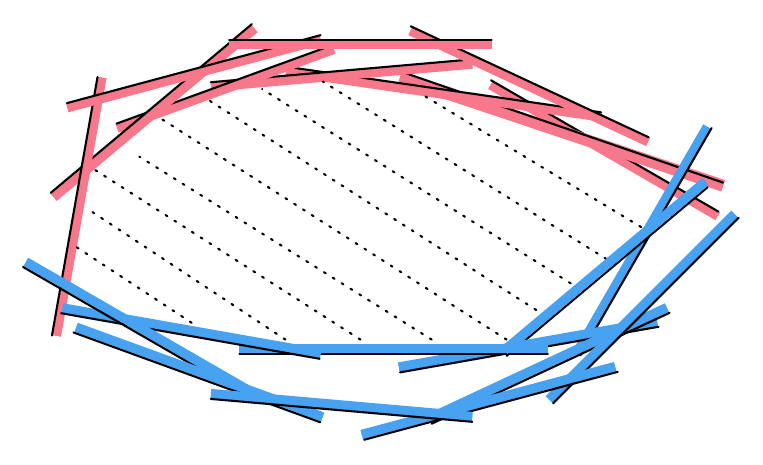

|

|
|
Abstract:
This paper proposes a novel method to efficiently solve infeasible low-dimensional linear programs (LDLPs) with billions of constraints and a small number of unknown variables, where all the constraints cannot be satisfied simultaneously. We focus on infeasible linear programs generated in the Rlibm project for creating correctly rounded math libraries. Specifically, we are interested in generating a floating point solution that satisfies the maximum number of constraints. None of the existing methods can solve such large linear programs while producing floating point solutions.
We observe that the convex hull can serve as an intermediate representation (IR) for solving infeasible LDLPs using the geometric duality between linear programs and convex hulls. Specifically, some of the constraints that correspond to points on the convex hull are precisely those constraints that make the linear program infeasible. Our key idea is to split the entire set of constraints into two subsets using the convex hull IR: (a) a set X of feasible constraints and (b) an over-approximate superset V of infeasible constraints. Using the special structure of the Rlibm constraints and the presence of a method to check whether a system is feasible or not, we identify a superset of infeasible constraints by computing the convex hull in 2-dimensions. Subsequently, we identify the key constraints (i.e., basis constraints) in the set of feasible constraints X and use them to create a new linear program whose solution identifies the maximum set of constraints satisfiable in V while satisfying all the constraints in X. This new solver enabled us to improve the performance of the resulting Rlibm polynomials while solving the corresponding large linear programs significantly faster.
|

![[PHOTO]](../../images/knight_small.png)